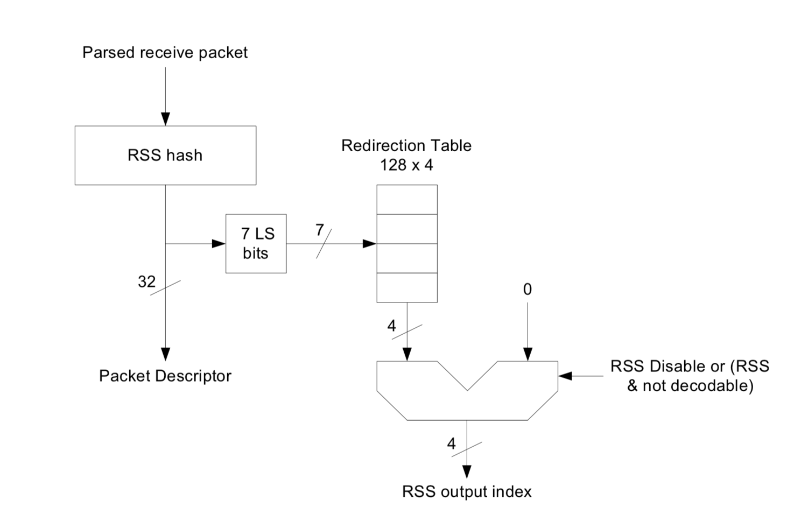

#0226 性能¶
如何获取网卡的型号¶
基本信息：
# lspci|grep -i ethernet
...
04:00.0 Ethernet controller: Intel Corporation 82599ES 10-Gigabit SFI/SFP+ Network Connection (rev 01)
04:00.1 Ethernet controller: Intel Corporation 82599ES 10-Gigabit SFI/SFP+ Network Connection (rev 01)
05:00.0 Ethernet controller: Intel Corporation 82599ES 10-Gigabit SFI/SFP+ Network Connection (rev 01)
05:00.1 Ethernet controller: Intel Corporation 82599ES 10-Gigabit SFI/SFP+ Network Connection (rev 01)
更详细的信息：
# lspci -v|grep -i ethernet -A20
...
05:00.1 Ethernet controller: Intel Corporation 82599ES 10-Gigabit SFI/SFP+ Network Connection (rev 01)
Subsystem: Inspur Electronic Information Industry Co., Ltd. 10G SFP+ DP EP102Fi4 Adapter
Flags: bus master, fast devsel, latency 0, IRQ 112
Memory at dc800000 (64-bit, non-prefetchable) [size=8M]
I/O ports at dce0 [size=32]
Memory at dbffc000 (64-bit, non-prefetchable) [size=16K]
Expansion ROM at d0400000 [disabled] [size=4M]
Capabilities: [40] Power Management version 3
Capabilities: [50] MSI: Enable- Count=1/1 Maskable+ 64bit+
Capabilities: [70] MSI-X: Enable+ Count=64 Masked-
Capabilities: [a0] Express Endpoint, MSI 00
Capabilities: [e0] Vital Product Data
Capabilities: [100] Advanced Error Reporting
Capabilities: [140] Device Serial Number 6c-92-bf-ff-ff-48-61-b9
Capabilities: [150] Alternative Routing-ID Interpretation (ARI)
Capabilities: [160] Single Root I/O Virtualization (SR-IOV)
Kernel driver in use: ixgbe
Kernel modules: ixgbe
...
Intel 82599 网卡如何实现 RSS¶
Intel 82599 datasheet.pdf/7.1.2.8 小节 Receive-Side Scaling(RSS)
- 对于 IPv4 协议的 TCP/UDP 包， 计算
RSS Hash = Hash(src ip, src port, dst ip, dst port)。 - 取哈希低位的 7 bit，将其映射到一个 Redirection Table 中，这个表一共 128 个槽位，每个槽位 4 bit。
- 输出槽位的值（4 bit）作为 RSS Index。
获取 RSS 配置信息：
# ethtool -x p1p1
RX flow hash indirection table for p1p1 with 24 RX ring(s):
0: 0 1 2 3 4 5 6 7
8: 8 9 10 11 12 13 14 15
16: 0 1 2 3 4 5 6 7
24: 8 9 10 11 12 13 14 15
32: 0 1 2 3 4 5 6 7
40: 8 9 10 11 12 13 14 15
48: 0 1 2 3 4 5 6 7
56: 8 9 10 11 12 13 14 15
64: 0 1 2 3 4 5 6 7
72: 8 9 10 11 12 13 14 15
80: 0 1 2 3 4 5 6 7
88: 8 9 10 11 12 13 14 15
96: 0 1 2 3 4 5 6 7
104: 8 9 10 11 12 13 14 15
112: 0 1 2 3 4 5 6 7
120: 8 9 10 11 12 13 14 15
RSS hash key:
1f:e1:8d:4c:b2:14:83:40:97:19:64:9b:d9:ee:19:b2:3d:31:6a:da:85:f2:f2:3f:39:b0:f1:eb:d8:53:8f:d1:92:70:be:90:92:2b:81:47
RSS hash function:
toeplitz: on
xor: off
crc32: off
输出的 RSS Index 最多为 4 bit，所以 RSS 最多支持 16 个队列。因此当机器的 CPU 数目大于 16，如果绑定网卡和 CPU，那么有一部分 CPU 会空闲不处理任何流量。